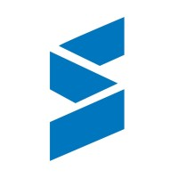
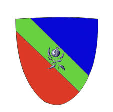
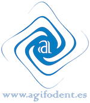
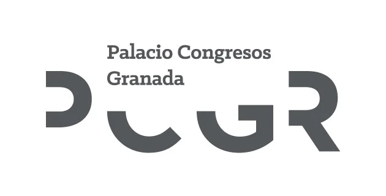

ISTEC - Instituto Superior de Tecnologias Avançadas do Porto
setembro de 2025 - setembro de 2028Nível 6, Licenciatura em Engenharia Informática (Computer Software Engineering)
Engenheiro de Software com sólida experiência em desenvolvimento web moderno, arquiteturas serverless e infraestrutura. Experiência prática na construção de aplicações escaláveis com Nuxt 3, TypeScript, Laravel, Cloudflare Workers e gestão de bases de dados relacionais e edge.



